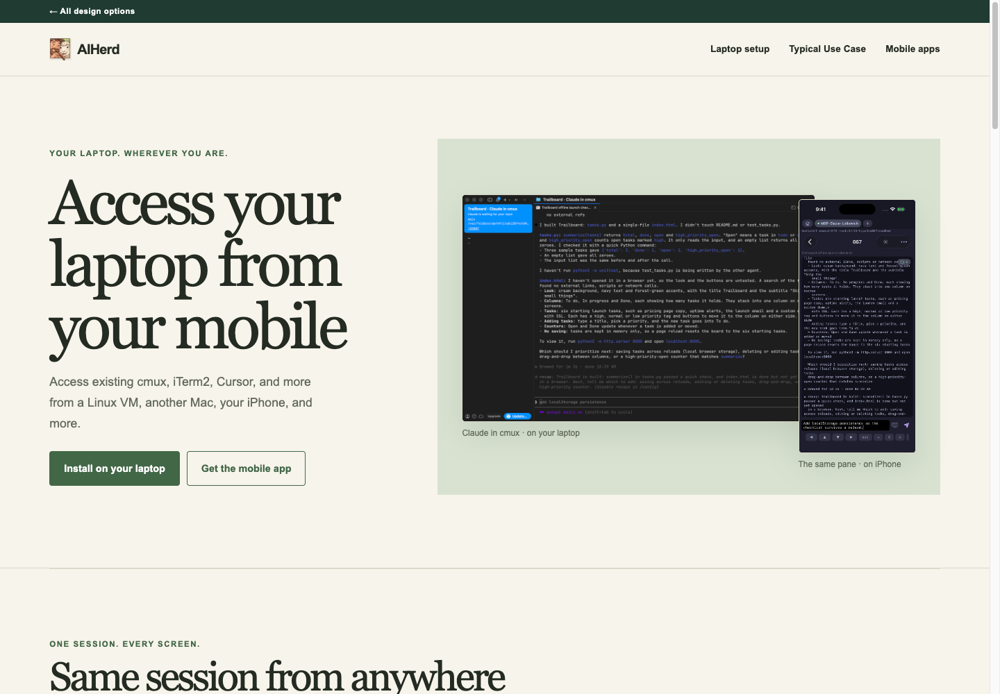
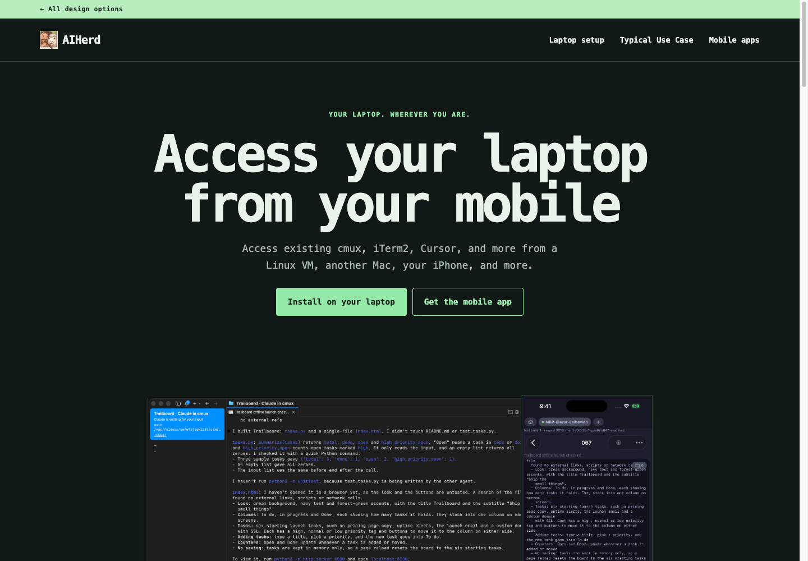
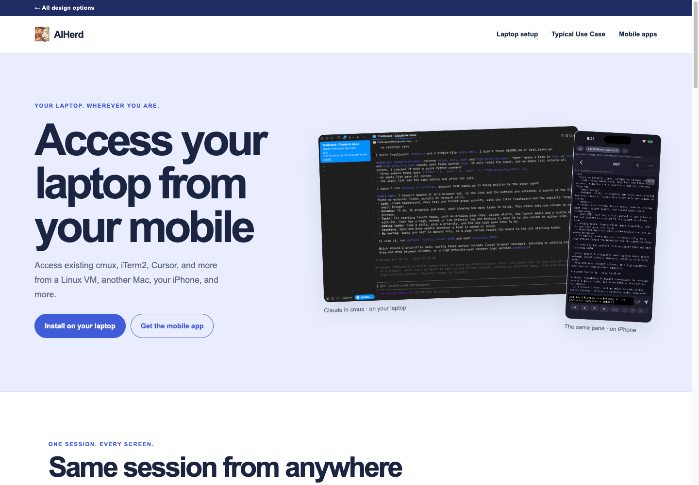

Warm, spacious, and human. Serif headlines and an alternating editorial layout give the product story room to breathe.
Explore Field Notes ↗Design exploration / 01—03
Explore three directions for AIHerd. Each contains the full product story, real screenshots, and working setup links. Open an option to see it at full size.

Warm, spacious, and human. Serif headlines and an alternating editorial layout give the product story room to breathe.
Explore Field Notes ↗
A dark, focused workspace. Monospace typography and command-line cues put the developer workflow front and center.
Explore Console ↗
Bright, bold, and approachable. Large typography and colorful sections turn the journey into a visual product tour.
Explore Canvas ↗These are design options for review. Choose the direction that feels closest; details can be refined from there.